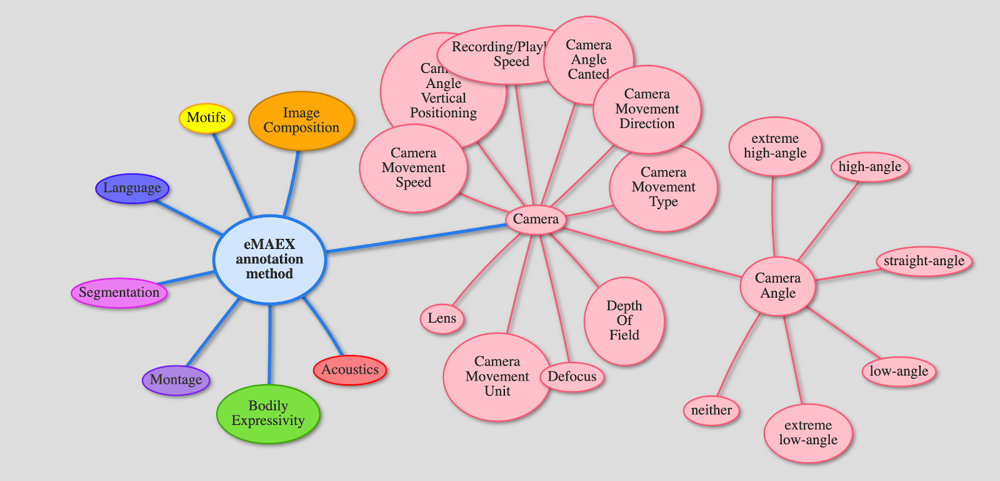
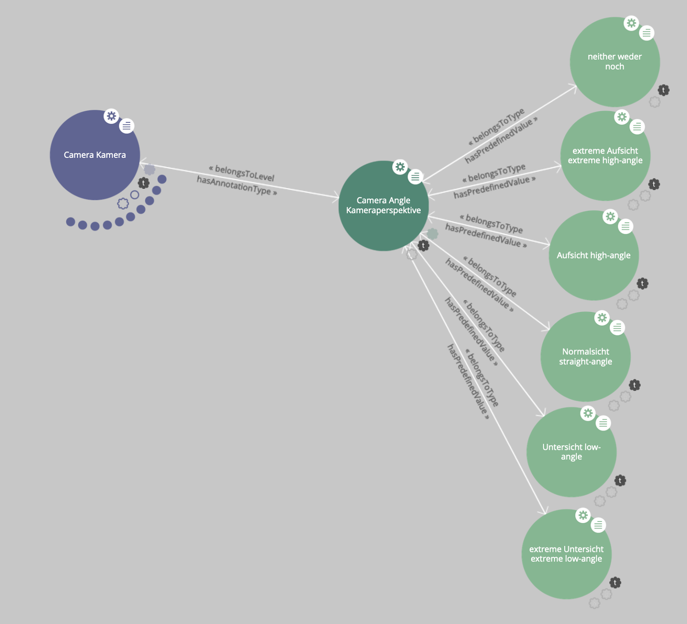
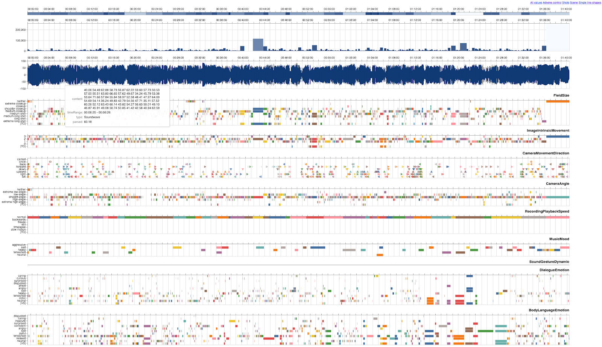
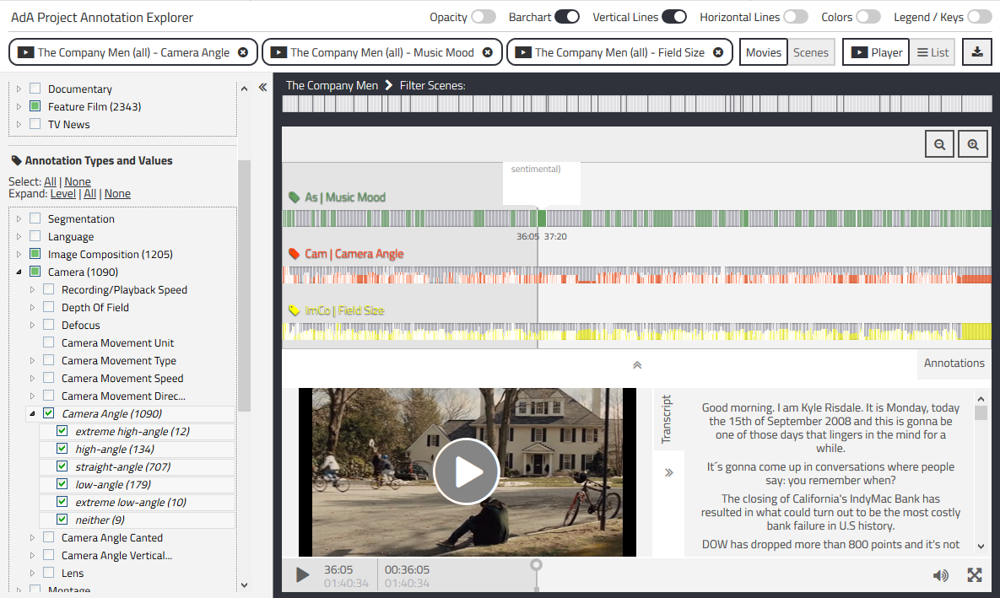

“A film is difficult to explain because it is easy to understand“ – this famous quote by Christian Metz (1991, 69) sums up a key challenge of film analysis. The complexity of audio-visual, time-based images, the theoretical premises of film analysis, as well as the overlaps in terminology across different approaches make comparable, systematic film analyses a challenging task. Nevertheless, the possibilities offered by the semantic web as well as linked and open data could change the way in which scholars analyse audio-visual images and relate their findings with each other. The research project ‘Audio-Visual Rhetorics of Affect’ (https://www.ada.cinepoetics.fu-berlin.de/en/index.html – a collaboration of film studies at Freie Universität Berlin and computational sciences at Hasso Plattner Institute, Potsdam) systematically defined film-analytical concepts and their relationships with each other to make them accessible as a semantic ontology for the structuring of film-analytical data. One of our main goals was to provide an open and expandable ontology for researchers concerned with the detailed analysis of the aesthetics of audio-visual images – not just for the application but also as a structural blueprint for further extensions and alternative modes of description. By means of a) providing an analytical framework for a vast variety of research concerned with moving images (from cinema to TV news and web videos), b) open publication and c) a general openness towards extension and progression, our ontology is designed to serve as an intersection between different academic disciplines and traditions.
This paper focuses on one of the fundamentals of our film-analytical work – the AdA filmontology (http://ada.filmontology.org/) – and discusses some of its implications. The methodological challenge to map reconstructions of film-viewing experience (see Müller/Kappelhoff 2018) within a digital framework resulted in turning the focus on three basic affordances: 1) Creating a vocabulary that is both grounded in a methodological film-analytical consensus as broad as possible while being at the same time applicable with regard to our specific theoretical framework on the aesthetic experience of audio-visual movement-images. 2) Setting up a mode of description that is defined, operationalized and condensed to a degree that allows for the joint annotation of audio-visual corpora by different analysts as well as the (semi-)automatic generation and visualisation of annotations. And that is 3) explicit enough in its definitions to allow researchers coming from different theoretical backgrounds to relate their approach critically to the analytical data or to adapt our analytical vocabulary to different theoretical frameworks (e.g. neoformalism, narratology or cognitive film theory) by selecting existing and adding new description levels. While the filmontology is currently used to inform qualitative studies on movement patterns, it was published under CC BY-SA 3.0 so that the ontology itself as well as all annotations can be used also in other contexts such as statistical evaluation or citizen science approaches.
In order to make the AdA filmontology usable in film-analytical research, we have participated in developing a video annotation software (https://www.advene.org/) – ADVENE – that enables the authoring and publishing of ontology-based video annotations as Linked Open Data by film scholars without programming skills. As a result, we have developed an environment and a set of tools that on the one hand allow for domain experts to directly participate in the development of a semantic vocabulary through familiar spreadsheet tools, and on the other hand enable the automated generation of a machine-readable OWL (W3C Web Ontology Language) ontology from the provided definitions with the help of converters and mappings [Agt-Rickauer et al. 2018]. These efforts resulted in a systematic vocabulary consisting of more than 400 individual values, assigned to more than 80 annotation types that are organized across 8 general levels of description such as Acoustics, Montage, Image Composition or Camera. For example the level Camera encompasses the types Camera Movement Unit, Camera Movement Type, Camera Movement Speed, Camera Movement Direction, Camera Angle, Camera Angle Canted, Camera Angle Vertical Positioning, Lens, Depth Of Field, Defocus, Recording/Playback Speed (see Figure 01).
Figure 01: Visualization of the AdA filmontology in Ontoviz.
All values, types, and levels are defined according to the ontology’s data model that enables the different kinds of annotations required for in-depth film analysis, including the contrastive or evolving relation between values. The type Camera Angle for instance is defined as: “Perceived vertical angle of (camera) vision. This annotation type provides a scale for camera angles from extreme high angle to extreme low angle.” (http://ada.filmontology.org/resource/2020/03/17/AnnotationType/CameraAngle) This scale includes the defined annotation values (extreme high-angle, high-angle, straight-angle, low-angle, extreme low-angle, neither) as well as a ‘syntax-element’ [TO] allowing for the annotation of an evolving relation (see Figure 02). The definitions of all levels, types and values are published as well at ada.filmontology.org.
Figure 02: Lodlive visualization of level-type-value-hierarchy for camera angles.
The vocabulary and the definitions are so far bilingual (English and German) with the possibility of adding further languages – thus allowing researchers to interconnect research data across language barriers. In our presentation, we will briefly present a selection of annotation types and values to exemplify the structural and definitional traits of AdA Filmontology that differentiate it from other film-analytical vocabularies, such as Abel Thematic List [Abel 2015] or the Movie Ontology (MO) [Bouza 2010], but also point out similarities to ontologies from other disciplines analyzing time-based media and aesthetic experience (e.g. musicology [Freedman 2019]). Furthermore research projects like Digital Formalism [Heftberger 2018], the Distant Viewing Lab [Arnold/Tilton 2019] as well as the ERC Advanced Grant FilmColors [Flückiger 2017] are important points of reference for our work regarding the computational analysis of audiovisual aesthetics at the intersection of Film Studies and Digital Humanities with a perspective of exploring the possibilities for further interoperability between approaches.
The AdA filmontology and exemplary annotation datasets using the systematic vocabulary (from feature films, documentaries, TV news and web videos concerning the global financial crisis after 2007) are published regularly under creative commons license. In addition, different ways of visualizing annotations as a ‘graphical score’ (https://olivieraubert.net/hpi/timeline.html) of audio-visual dynamics (http://ada.filmontology.org/explorer/ ; see Figure 03) and querying these semantically structured annotations (see Figure 04) are developed and published online (https://github.com/ProjectAdA/public) in order to make the results available to and readable for other film scholars as well as researchers from other domains.
Fig. 03: Several annotation types of a whole feature film in an adjustable and zoomable ‘graphical score’ generated with Advene.
Fig. 04: Querying annotation data in the annotation explorer web application.
References:
[Abel 2015] Abel, Richard (2015) Abel Thematic List V2. onomy.org.
[Agt-Rickauer et al. 2018] Agt-Rickauer, Henning; Aubert, Olivier; Hentschel, Christian; Sack, Harald (2018) Authoring and Publishing Linked Open Film-Analytical Data. EKAW Posters and Demos 2018.
[Arnold/Tilton 2019] Arnold, Taylor; Tilton, Lauren (2019) Distant viewing: analyzing large visual corpora. In: Digital Scholarship in the Humanities, 34, p. i3-i16.
[Bouza 2010] Bouza, Amancio (2010) MO “the Movie Ontology”. Movieontology.org.
[Flückiger 2017] Flückiger, Barbara (2017) A Digital Humanities Approach to Film Colors. In: The Moving Image, 17,2, p. 71–94.
[Freedman 2019] Freedman, Richard; Fiala, David; Walter, Micah (2019) The Quotable Musical Text in a Digital Age: Modeling Complexity in the Renaissance and Today. Conference Paper at DH2019 in Utrecht, NL.
[Heftberger 2018] Heftberger, Adelheid (2018) Digital Humanities and Film Studies. Visualising Dziga Vertov’s Work. Cham, Springer.
[Metz 1991] Metz, Christian (1991) Film Language. A Semiotics of the Cinema. Chicago, The University of Chicago Press.
[Müller 2018] Müller, Cornelia; Kappelhoff, Hermann (2018) Cinematic Metaphor: Experience – Affectivity – Temporality. Berlin/Boston, De Gruyter.